I. Team Formation and Application Area
Members & Roles
Reno Bowen User Testing Lead Takes primary responsibility to design user studies, recruit participants, and conduct evaluations.
Nicholas Hippenmeyer Development Lead Writes and manages code, oversees GitHub repository, ensures good software engineering practice.
Ilias Karim UI/UX Design Lead Keeps team focused on design process, pushes creative boundaries, leads design of UI and associated assets.
Brad Lawson Documentation Lead Manages the team website and process documentation, takes and shares meeting notes, assists with evaluation.
Keegan Poppen Audio Engineering Lead Responsible for audio engineering
Problem Area & User Needs
Amateur musicians have benefited greatly from new, cheap recording software and technology. Almost anyone can learn how to use GarageBand or other similar software. However, to control the software while remaining engaged in playing the instrument can be a difficult and frustrating task. How might we make the experience of recording and practicing music at home more seamless? How might we redesign on-the-fly performances?
A Kinect-based interface would allow musicians to more easily record, playback, and loop their audio recordings or practice tracks. Leveraging audio and gestural feedback, musicians would no longer be forced to depart from their instrument to coordinate the recording process by using a mouse to manipulate sliders and knobs.
II. Initial Prototyping
Feasibility Study
Gesture Feasibility
A variety of gestures capable of being performed while playing guitar or drums were demonstrated and evaluated for feasibility. Given the lack of an assembled drumset, a worse-case scenario is evaluated with the majority of the lower torso occluded.
Guitars
With guitars, the right hand can easily be taken advantage of for gestures given its visibility and freedom. In addition, tilting of the neck of the guitar allows the execution of gestures seamlessly mid-play. Foot and leg lifts and extensions can be used as a clutch.
Gestures which might involve lifting the guitar too high can block too many joints, leading to inaccurate and unreliable measurements. If the left hand is to be used for gesturing, it is best used above the neck of the guitar to ensure visibility.
Drums
Drums pose a particular challenge to the Kinect sensor, given that many drumsets will largely if not completely occlude the entire lower half of the performers body. In addition, playing drums involves movement of the entire body, ruling out mid-performance gestures almost entirely.
Fortunately, between-play configuration of the software can be accomplished by using hand-over-the-head as a clutch. Unless someone was a particularly wild drummer, this could serve as a suitable indication that the remaining free hand is to be recorded for 2D/3D gesture control.
A final thought is that the drummer could potentially be recorded from behind. Unfortunately, the issue still stands that they are making use of all four limbs during play. However, it opens up the possibility that given a suitably neat drum configuration, the feet could possibly be used to signal gestures once a clutch has been enabled. However, given the variable amount of space different drummers have behind their drumset, this would be an almost certainly unreliable option. It’s also worth noting that drumsets are very often set up in rooms against a corner or wall (they’re rather space-consuming), making the positioning of a Kinect sensor behind a user impractical.
Analysis of Use Cases
1. Performance
Prototype Sketches
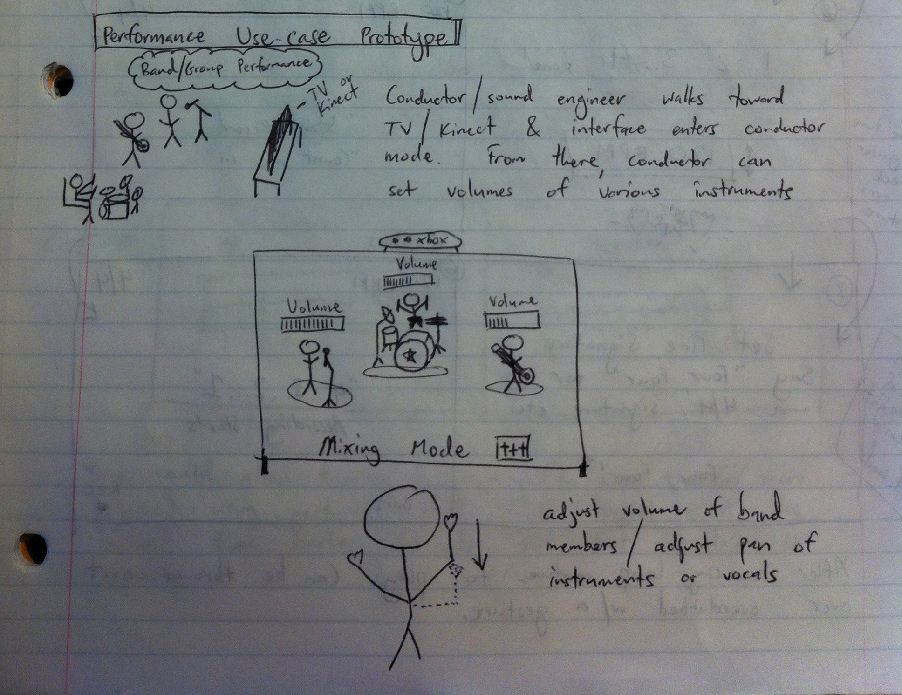 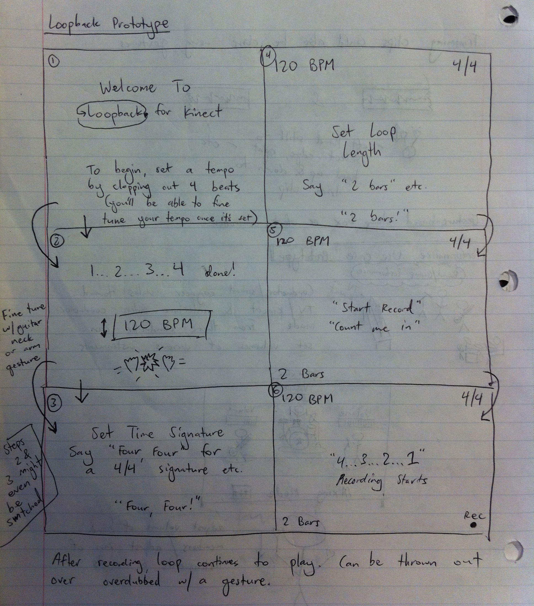 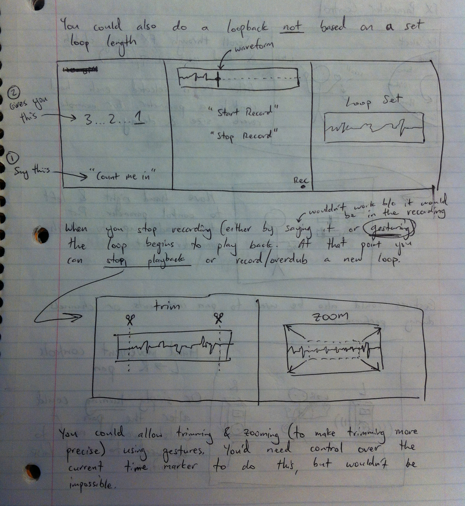 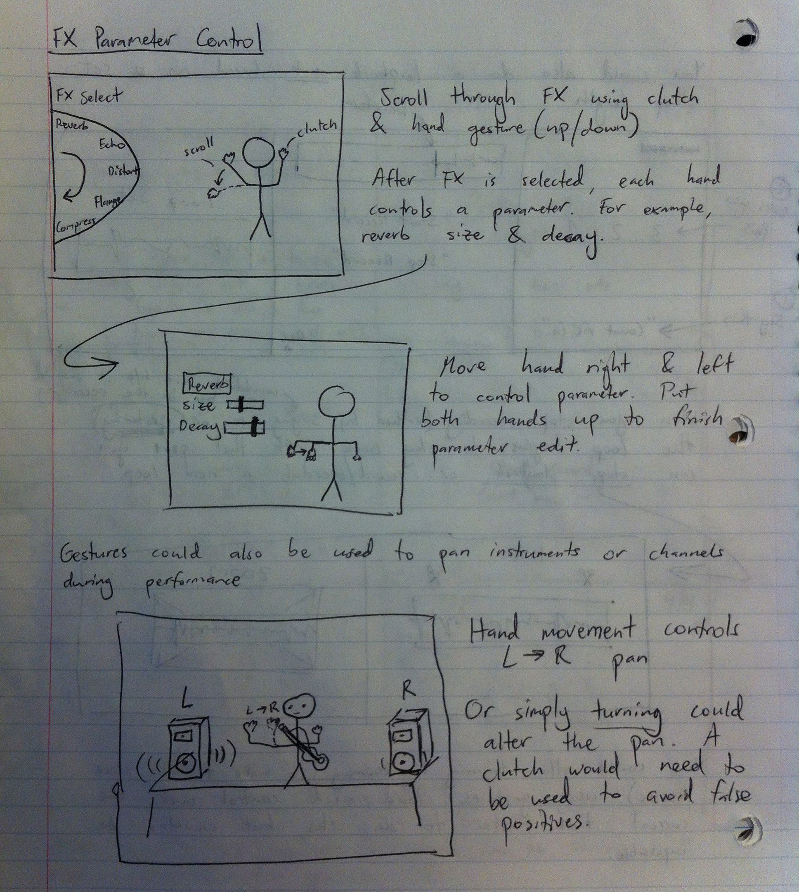
Virtual Stomp Box Prototype
With music as our high-level application area, a natural use-case to peruse was gesture-based performance interfaces. After a few initial brainstorming sessions with the entire group, I delved deeper into musical performance as a specific application area and came up with a number of realistic scenarios in which gestural interfaces would either simplify or improve upon existing methods for controlling volume, FX parameters, and even loopback performance. One idea that I particularly liked--because of its ability to combine a number of promising concepts developed in our initial brainstorms--was a virtual stomp-box. Using the Kinect for skeletal tracking, I thought it would be both feasible and compelling to create a virtual stomp-box for guitar players that uses the stomping of their foot to select between FX regions and the neck of their guitar to adjust the corresponding effect level. Three presets (or possibly more) could be stored to zones at the bottom of the screen (by dragging them from a scrolling list on the left side of the screen) and then after they were assigned, a guitar player could select them by stepping on the respective region. Then while playing, a guitar player could tilt the neck of the guitar in order to control the effect level. This control mechanism would likely result in some false positives--a problem that would need to be addressed in future iterations of the prototype, perhaps by introducing a clutch gesture such as a foot movement--but I thought a key need the interface should address was the problem of allowing guitar players to control effects without taking their hands off of their instrument.
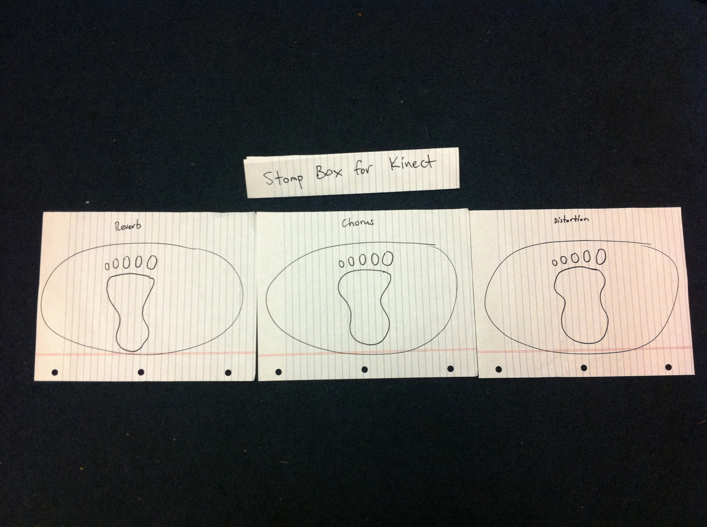Interview Notes
I presented the idea and general concept of a virtual stomp box to Scooter (a friend who plays ukulele) and set up a rough paper prototype of what I imagined the user interface to be. For lack of a Kinect, my simple prototype consisted of three stomp box regions with corresponding effects. I also told him about the capability of being able to assign different effects to these regions from a list of presets. Here are some of his reactions and comments on the interface and idea:
- "I can see this working if you're standing. But would it work sitting down?"
- "Do stomp boxes usually have 3 pedals or more? I feel like they're a lot more complicated than this, with plenty more effects."
- "Could you use both legs to control the effects? Or would it just be one leg?"
- "Perhaps adding a drum beat or backing tracking would be cool if you're trying to perform alone."
- "It might be weird to not see pedals or the effects regions on stage."
- "Perhaps you could move the effects regions to surround the body (kind of like Dance Dance Revolution) as opposed to having them all in front of you."
Although I couldn't write down all of the things he said, Scooter also talked quite a bit about the lack of visual or mechanical feedback and how it might be confusing or difficult to control effects on stage without being able to see them. I agreed, but then realized that the virtual stomp box could follow you wherever you went. Instead of being stationary and located at one point on stage, the clutch for the stomp box could be moving your foot forward, and then you could stomp down either to the left, middle, or right of your body in order to select from each of the three effects. That way, no matter where you were on stage, you could change effects by simply moving your foot forward and stepping down. Cool!
Scooter also agreed that using the guitar neck to control effects parameters/levels would lead to some miscues and hiccups, but liked the idea of being able to control things seamlessly with a guitar instead of having complex knobs, etc.

2. Recording
The following prototype explores a way of recording audio while requiring minimal input from the musician.
Prototype Sketches and Description
The image below displays the way the app works/looks while you're not recording. The current waveform from whatever is being recorded is displayed at whatever playhead is already set for the track, but passes right through it because nothing is being recorded. You can start recording by hovering over the pause area on the right side, which changes state to record. Note that all of the mode change / settings buttons are across the top right-- the easiest place to reach as a right-handed guitarist-- and could easily be switched to the left side for southpaws. One immediate observation made by the user upon seing this screen was "what is the arrow?" (answer: the "home" button, which is a manual backdoor to conductor mode-- a bit unclear)
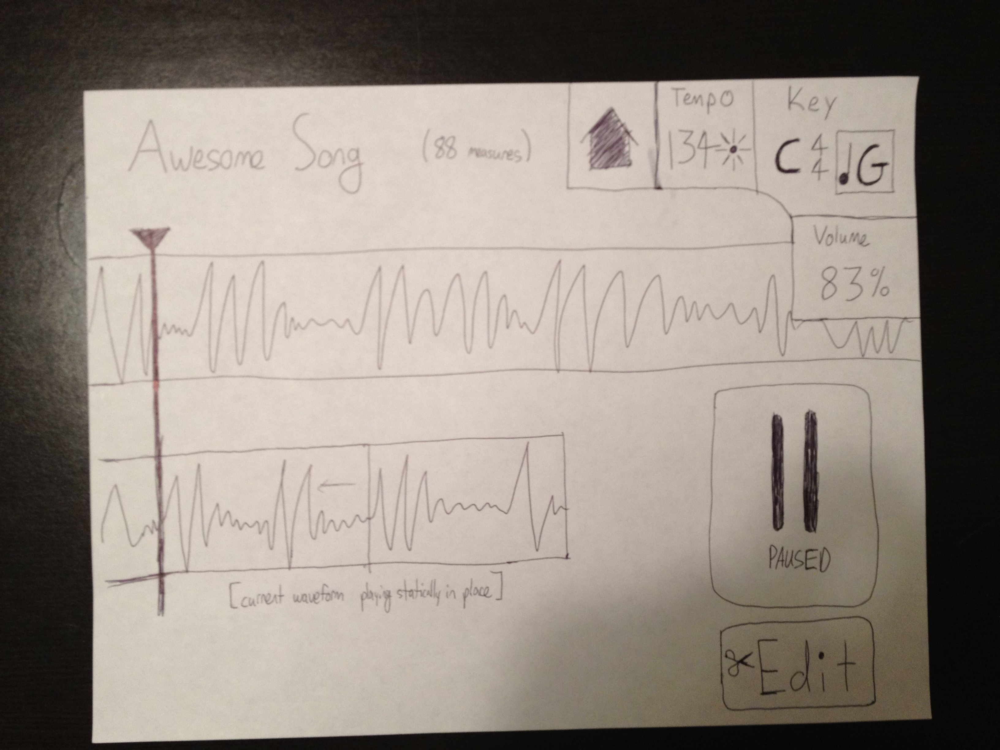Once you start recording, the display changes to demonstrate that recording is happening-- the waveform for what is being recorded starts anchored at the left playhead and extends to the right in real time, counting the user in before starting recording.
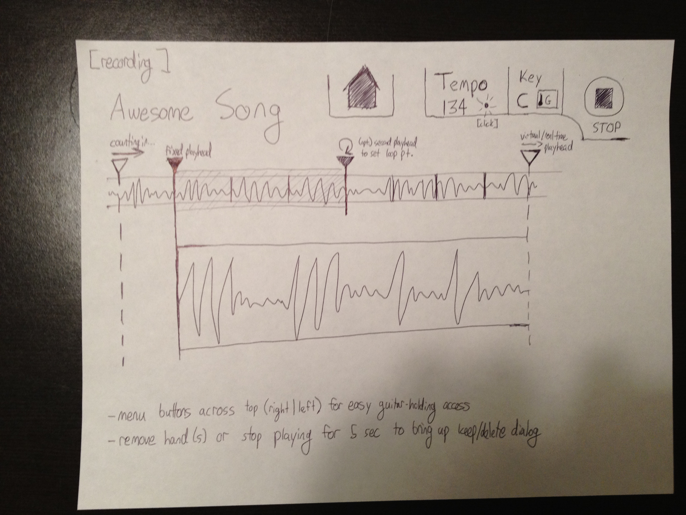Once you stop recording it automatically asks you if you want to keep what you just played or not, remembering your preference from last time. This dialog times out after a few seconds, so that if the user just wants to sit and wait to start recording again, he or she can without having to lift a finger.
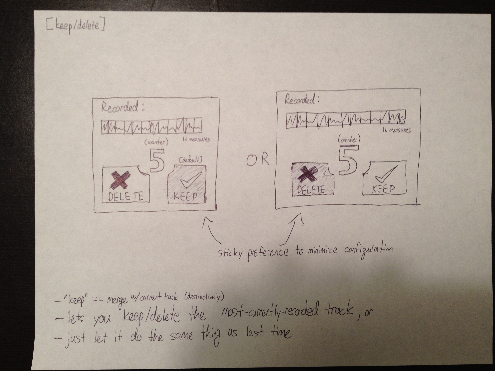The "change playhead" modal selector comes up when the user puts both hands up, allowing him or her to use either one hand to set the playhead or two to select a range (to either loop over it while recording or to copy / paste / delete it).
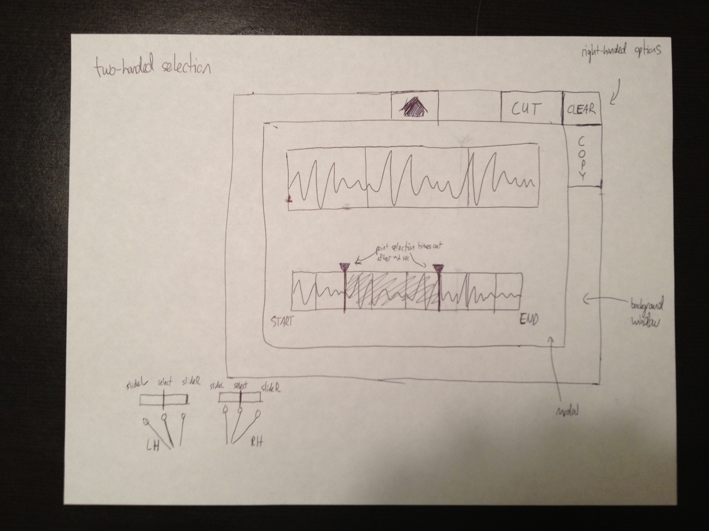"Conductor Mode" was a first shake at having some sort of main menu that comes up when you hover over the home button at the top of the screen.
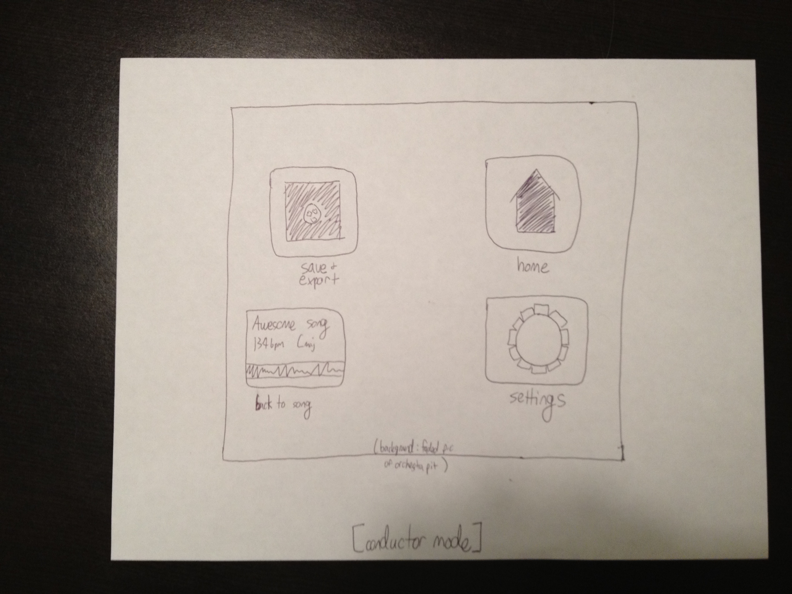Different modal dialogs that let the user change the tempo and key of the recording by a variety of input methods (guitar neck + clutch, clapping, etc.). The key dialog also features a visual guitar tuner that displays the current note, and whether it is sharp or flat.
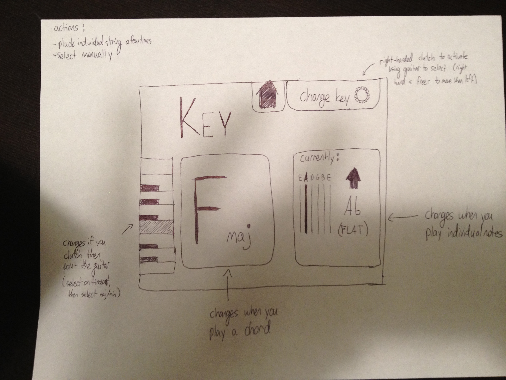 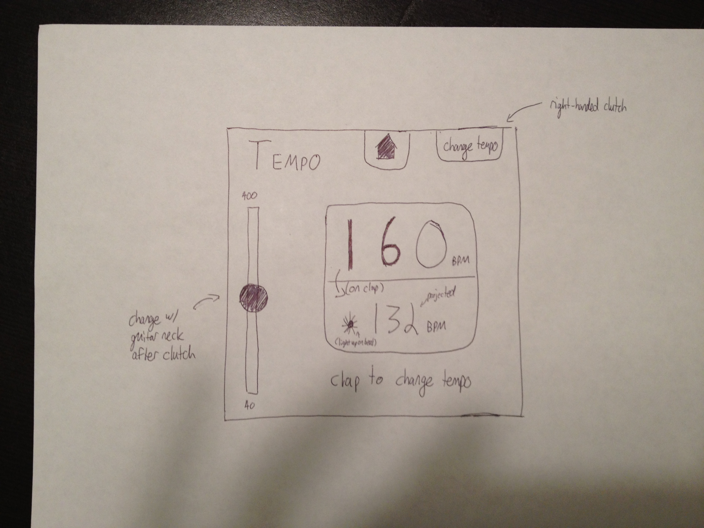User Testing Photos
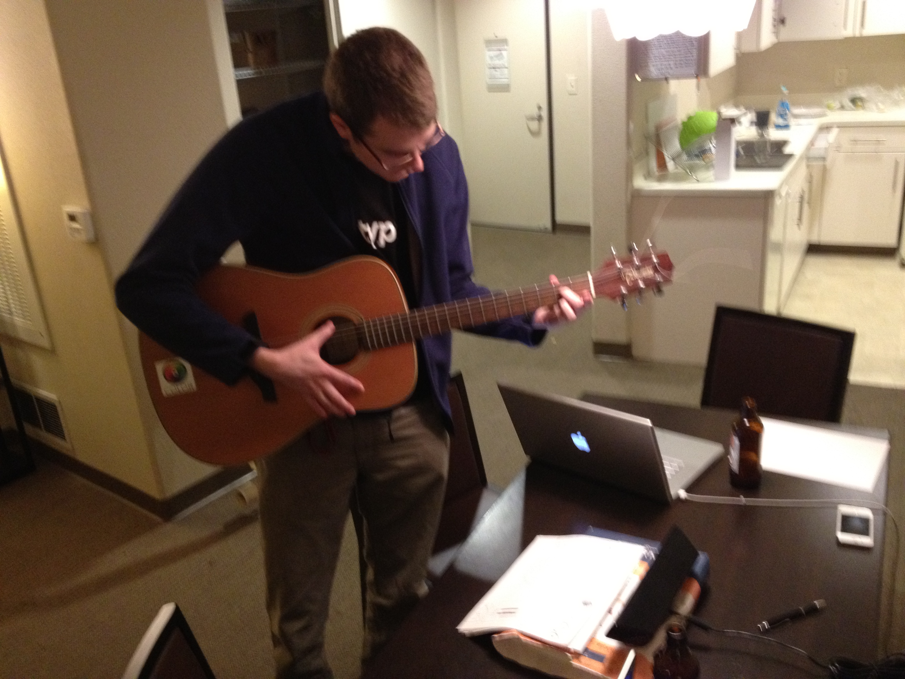 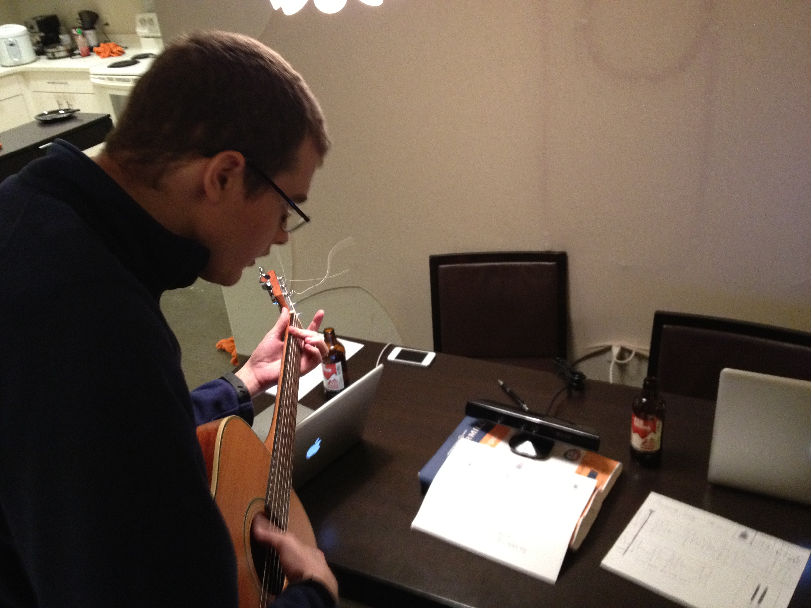 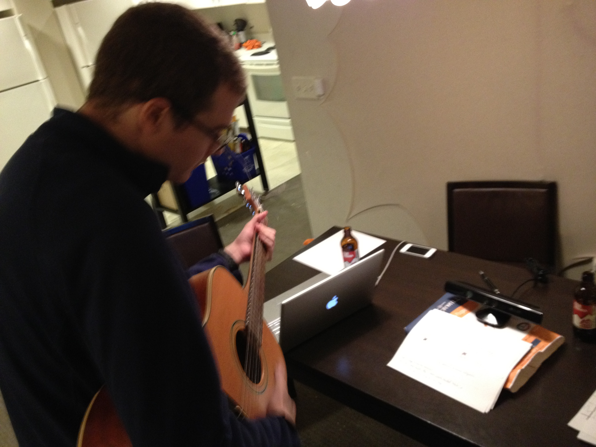 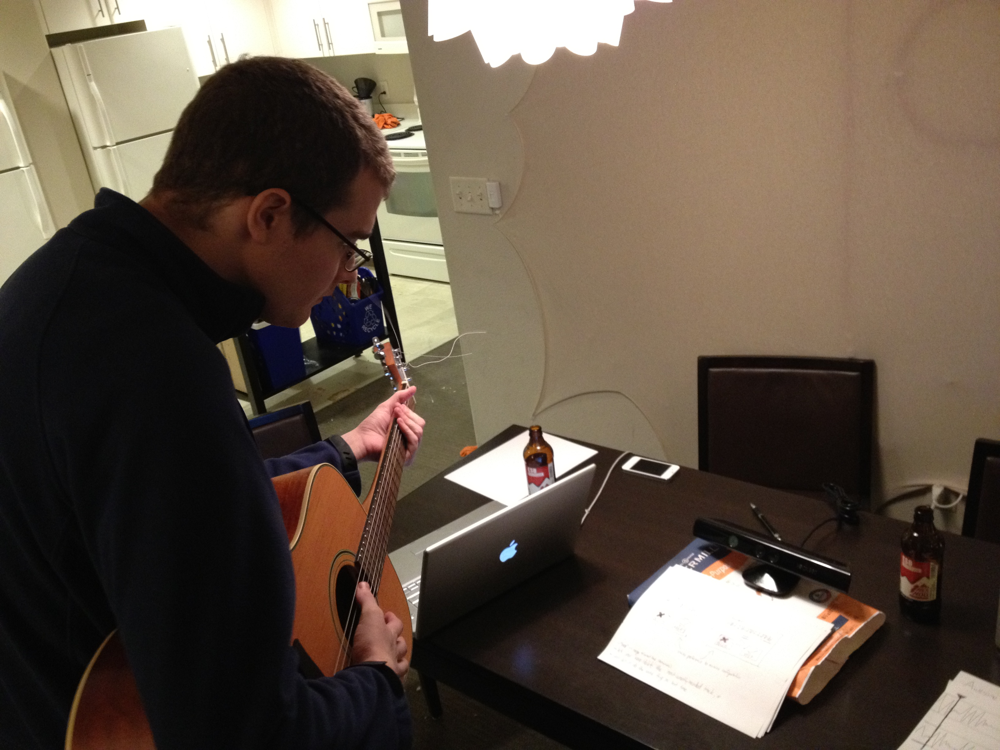3. Practice
Overview
Having a songbook that could be flipped through with one arm or a simple clutched gesture would be advantageous compared to bending over a small computer and using a mouse and keyboard while trying to hold your instrument, or after stepping away from it altogether. A brief “wizard of oz” test session run through of the paper prototype verified this hypothesis. Our test user was enthusiastic and liked that he never had to move his guitar out of the way while for example, leaning over a keyboard. He found the gestures easy to learn and use, and not too strenuous.
The best way to encourage learning notes, chords, and scales is probably to “gamify” the process, instead of using them as an interface, using them to controlling a virtual onscreen avatar, for example in a platforming game, not unlike many typing tutor or mathematics computer games. Though navigating complex menus by playing notes could work quite well for trained guitarists, another issue that arises is that such an interface doesn’t truly leverage the Kinect’s capabilities, since it could mostly be controlled with a simple microphone interface. The gesture interface almost feels tacked on, like all interactions should be done be playing the guitar. Perhaps the Kinect could be useful in such a context as a clutch, but it would never be the main means of interacting with the software in such an applcation.
Thus, it is not clear that the Kinect is the ideal interface for music learning or practicing applications. To begin with, it probably can’t teach you how to hold your instrument and move your fingers properly, since the SDK doesn’t provide data on such small joints. It could also be argued that using Kinect gestures to operate such an interface would actually detract from the learning or practice application, since any gesture that would rely on the Kinect’s unique detection capabilities would require the user to gestate in a manner not inherent or necessarily applicable to playing the instrument they are learning to play, for example with their legs or by removing at least one hand from their instrument.
Some of the ideas for a learning or practice application utilizing a kinect interface that we brainstormed, sketched, and prototyped show promise. The tuner could be useful implemented with a natural user interface, but it is difficult to justify a standalone Kinect tuning application. If anything, the tuner should be a feature of some more full-featured signal processing or mixing application, which could be useful in other contexts like recording and performing.
Prototype Sketches
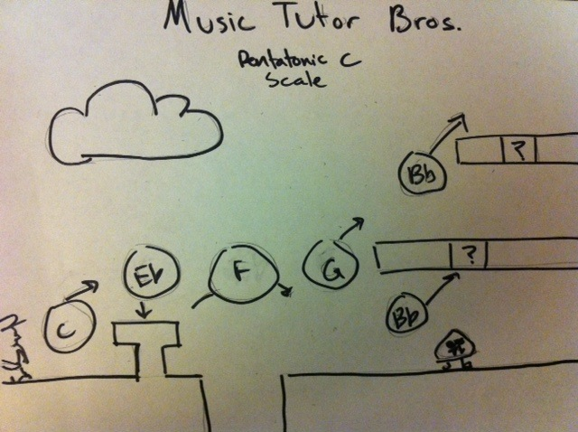

User Testing Photos
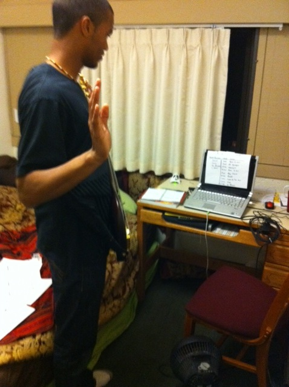Conclusion
Through a series of feasibility tests, we determined that the Kinect could reliably be used to detect many gestures a guitar player might use to control a gestural interface. A drummer however posed problems for the sensor since most of the body is obscured by the drum set. As a result, we decided to focus on potential use-cases for a guitarist, and prototyped various applications within the following the three areas: performance, recording and practice.
The virtual stomp box proved to be a promising idea for a guitarist performing on stage, since it would allow the performer to move around freely and still provide the flexibility of changing effects mid-performance. However, the lack of visual feedback could be an important limitation for this idea. The gestural interface explored for recording audio also yielded positive feedback. This type of application could potentially provide a lot of utility for a musician, since recording audio tends to be an interactive process where many takes and frequent editing may be needed. Finally, it was determined that a Kinect-based interface would not be ideal for learning applications. A tuning feature could however be very useful as a component in some other music-based application.
III. Wizard-of-Oz Testing
For our Wizard-of-Oz testing, the two tasks we focused on were learning and audio recording, specifically as they apply to guitar players. We chose these two tasks because we felt they were the most promising in terms of feasibility, the potential to address user needs, and their suitability to gestural-based interface control. The first task, learning, was based on a song-book interface that allowed users to learn how to play songs by scrolling through a list of available tracks and selecting their desired track by strumming a corresponding chord. The second task, recording, enabled users to create simple audio recordings, set tempo, save and export files, and make basic edits on clips.
Navigation of the song-book interface was fairly straightforward when it came to scrolling and moving between pages. Scrolling required users to slide their left hand down the neck of the guitar as a clutch and then scroll up and down using their right hand. After they had found the song they wanted, they could select it by playing the corresponding chord that was displayed next to the song title. This seemed like a reasonable way to select songs at first, but our wizard-of-oz testing revealed that requiring users to strum a specific chord in order to select a song (such as A minor to start learning a song by Nirvana) made it difficult for beginners to navigate our interface because they had no prior knowledge of guitar chords. Luckily, users could gesture for help by raising their left hand above their heads, which brought up a diagram that showed them how to play the specific chord they needed. In this way, our application helped users learn new chords even as they selected songs. However, as testers also pointed out, we would have to achieve a balance between teaching users new chords and allowing them to select the songs they wanted without getting bogged down too much.
It was difficult to record reliable Kinect data because there were so many people in the room during lab, but we managed to record a few realistic performance scenarios in which guitarists navigated through our song-book, selected a song, asked for help by raising their left hand, and adjusted the playback tempo in order to make it easier to play along (by moving both hands up or down). We did this using an app skeleton that we built for our project that allowed us to record the various input performances for later playback. Even though our testers were working from paper prototypes, our launch screen/diagram explained all of the necessary gestures in such a way that our users were able to execute them fairly easily each time.
One of the big things we learned during our initial wizard-of-oz tests for the learning task was the fact that the Kinect often mistakes the neck of the guitar for the musician's arm. This could certainly cause problems, especially with gestures that involve moving one's arm in close proximity of the guitar neck. With that in mind, we determined that the strumming hand is far more effective when it comes to gesturing because it rarely gets occluded by the guitar.
In addition, one tester pointed out that on-screen diagrams should match the orientation of the guitar player to avoid confusion. For example, if someone is playing guitar right-handed, any diagrams or images featuring a guitar player should be oriented the same way on screen. Our second task, recording, also allowed us to capture a few realistic usage scenarios in which users were prompted to start recordings, edit tracks they had laid down, and delete or keep recordings they had just completed. We were again working from paper prototypes, but we still managed to record some input performances that will hopefully be useful in future iterations of our prototype.
One thing that we learned about recording and playback is that controlling playheads and cropping clips is a fairly intuitive process in a gestural-based interface. For example, to adjust the playback/recording head, we hardly had to instruct users to grab it with their hand and move it back and forth in order to adjust its positioning. For the most part, they did this instinctively. Editing tracks was very similar, as users simply had to grab each end of the clip and move their hands back and forth in order to trim it down.
Another thing that we learned about recording during our wizard-of-oz testing is that holding a guitar makes it fairly difficult to gesture with two hands (because it can get in the way and/or get tracked by the Kinect as we found out during our first tests). This requires most two-handed gestures to be done predominately above the shoulder line in order to assure the user's arms are being tracked properly, which can cause fatigue if done for a long period of time. In future iterations of our prototype, we will have to keep these limitations in mind, and revise any gestures accordingly.
We learned quite a bit about each interface idea during our wizard-of-oz testing, but from the results we recorded and observed, we feel like the recording task has more potential in terms of a gestural-based music app. Although the song book would likely make for an interesting application, we feel that an audio recording app could more effectively leverage the Kinect's gesture sensing capabilities while allowing users to intuitively start/stop, edit, and save recordings. Many of the questions raised during our wizard-of-oz testing will likely drive future iterations of our prototype, and we look forward to exploring them in milestone four.
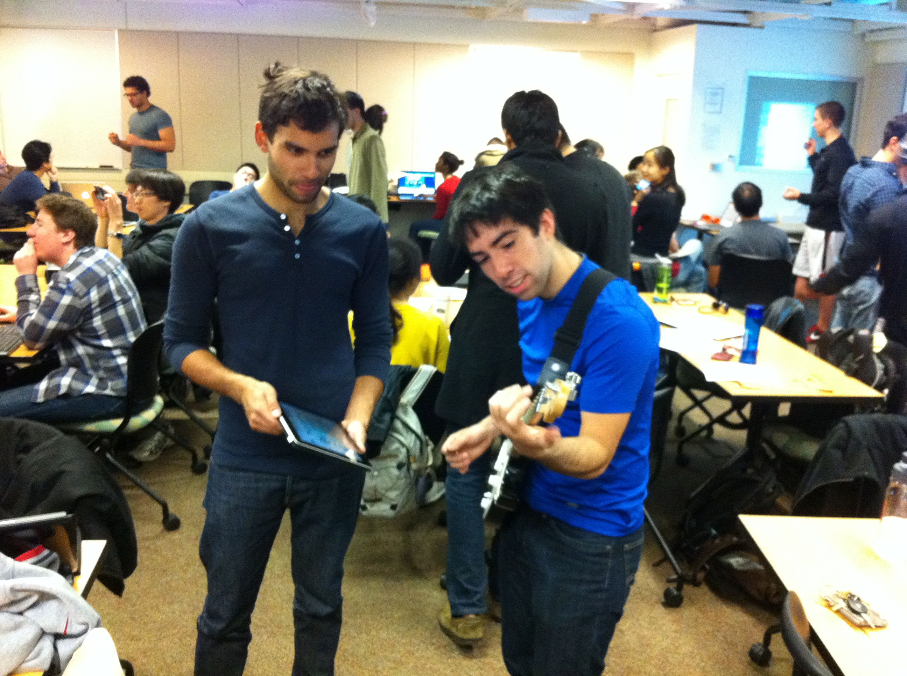IV. Functional Prototype I
Feature Choices, Rationale, & Implementation Progress
For the first functional prototype of our guitarist-friendly music recording interface, we chose to implement the following features:
-
Voice-activated audio recording interface
- Say "record" to start recording (while on-stage)
- Step off stage to stop recording
- "Play" to cue playback
- "Stop" to stop playback
-
Gesture-based audio recording interface
- Swipe right to record
- Swipe left to stop recording
- Swipe left to start playback
- Swipe left while playing to stop playback
- Stage indicator and clutch
- Waveform display
- Microphone input level display
- Microphone input level adjustment
- Elapsed time display
While our main focus in terms of features was getting our recording interface up and running and allowing users to start recording, stop recording, and play back recordings, we also implemented two different controllers for our application. The first controller utilizes a combination of voice commands and a clutch (based on the position of the user's head) in order to determine if he/she is "on-stage" or not. As the user moves around in front of the Kinect, the position of their head is tracked and displayed on screen. If a user is "on-stage" (i.e. - their head is centered relative to the Kinect), the indicator at the top of the screen turns from red to blue, notifying them that they can now start recording by saying "record." Recording can then be stopped by stepping off-stage. The rationale behind this design decision was to eliminate false positives by ensuring that voice commands are only detected when someone actually intends to use our app. As far as the choice to track the user's head goes, we determined that head position is a good indicator of body position and a guitarist's head is also hardly ever occluded (as opposed to their waistline), so the Kinect can reliably pick it up.
Our second controller is entirely gesture-based and relies on swiping motions in order to start/stop playback and recording. The rationale behind this came mainly from our wizard-of-oz testing where we discovered that one-handed gestures are natural for guitarists to perform using their strumming hand. We also feel that a swiping gesture is really easy to remember, isn't too fatiguing, and can be reliably detected using the Kinect.
Another feature that we chose to include was a waveform display that traces out the actual wave that is being recorded by our app. This gives users visual feedback and confirms that they have in fact started or stopped a recording. We are also thinking about including a playhead marker that indicates playback position so users know exactly where they are in a track.
Our microphone level adjustment allows users to control the input volume of the microphone using a left-to-right slider, which can be confirmed by looking at the microphone input level display. The rationale behind the slider was to give users greater control over their audio recordings and allow them to eliminate clipping (or distortion from the input level being too high). This is especially important when recording instruments because clipping can make even the best guitarist sound awful.
The elapsed time display is similar to the waveform display in that it offers users visual feedback and confirms that audio is being recorded. It also lets users know how long they've been recording for and could be used in the future to make fine adjustments to the playhead position.
Remaining Implementation Ideas/Design Issues (from high priority to low priority)
- Reorganize audio recorder to better support multiple tracks
- Better understand Sample Aggregator implementation to represent multiple waveforms
- Simultaneous playback and audio recording
- Being able to scroll through wider waveforms rather than having them cut off at the end of the screen
- Navigating to a specific point within a track
- Exporting audio into a convenient format
- Microphone selection
- Add effects (distortion? flange? echo?)